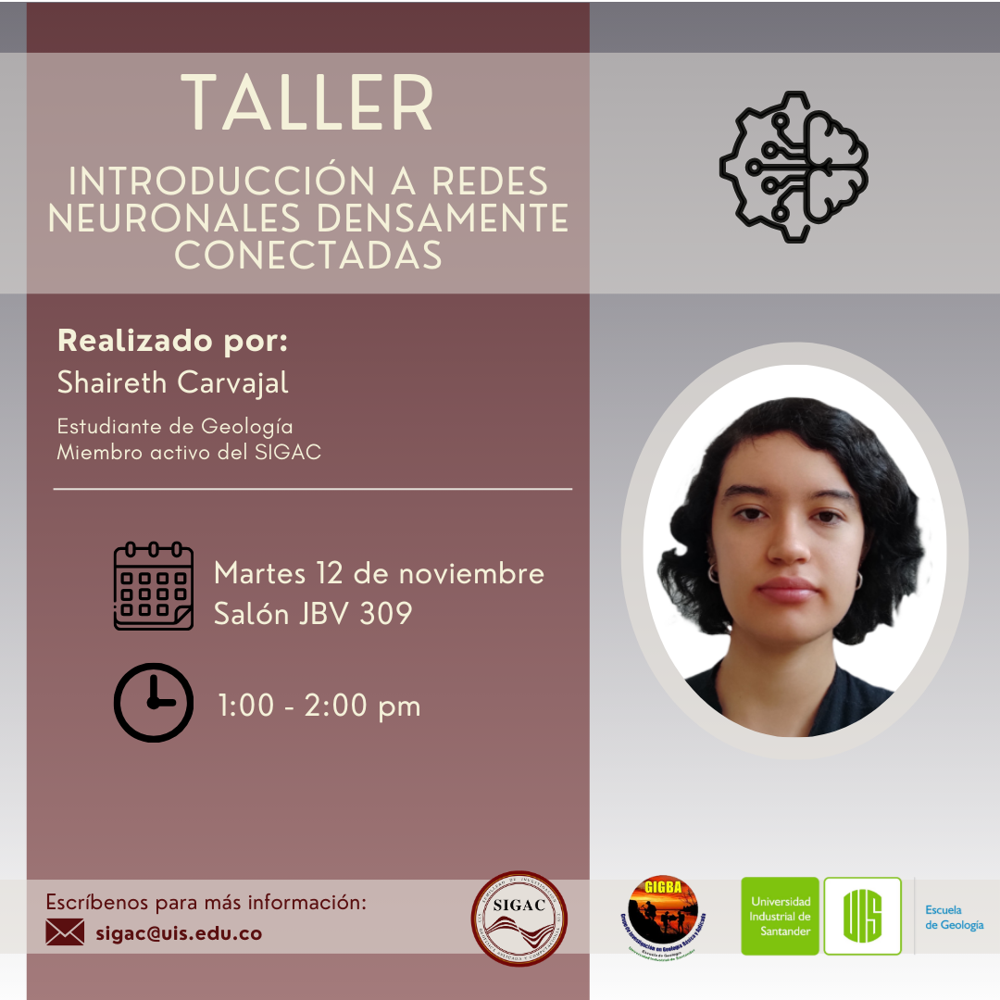

Variables categóricas
Representan unidades y clases temáticas del territorio.
Este proyecto exploró la estimación de la susceptibilidad por movimientos en masa mediante técnicas de aprendizaje automático y procesamiento de lenguaje natural. Se integraron variables geológicas, geomorfológicas y topográficas del área de estudio en Popayán, combinando información categórica y continua para experimentar con una arquitectura de red neuronal.
Se trabajó con 11 factores condicionantes representados en capas ráster, organizados en dos grupos según su naturaleza. Se trabajo con un conjunto de datos de entrenamiento y prueba de 200 datos suministrados por el Servicio Geológico Colombiano.
Representan unidades y clases temáticas del territorio.
Describen propiedades topográficas e hidrológicas.
La arquitectura integró las variables categóricas mediante una capa de embeddings y las variables continuas como entradas numéricas. Posteriormente, ambas representaciones se aplanaron y concatenaron para alimentar la red neuronal.
X1 · X2 · X3
Representación mediante embeddings
X4 · X5 · X6 · X7
X8 · X9 · X10 · X11
Datos numéricos
Flatten · Concatenación
Tres capas ocultas · Clasificación binaria
Estimación de la clase de susceptibilidad
Esquema conceptual de la arquitectura. No representa el número de neuronas ni las dimensiones internas de cada capa.
Se exploró la distribución de las representaciones aprendidas mediante estadísticas descriptivas y visualizaciones en TensorBoard, incluyendo una proyección bidimensional con t-SNE y una visualización tridimensional.
Como parte de esta experiencia, impartí el taller «Introducción a redes neuronales densamente conectadas» en la Escuela de Geología de la Universidad Industrial de Santander. La actividad incluyó un ejercicio práctico de implementación de una red neuronal.

Afiche del taller · Escuela de Geología, UIS · 2024
Material práctico utilizado en el taller y recursos relacionados con el desarrollo computacional.
Notebook de introducción a redes neuronales densamente conectadas, con un ejercicio de clasificación binaria mediante datos sintéticos.
Descargar notebook ↓